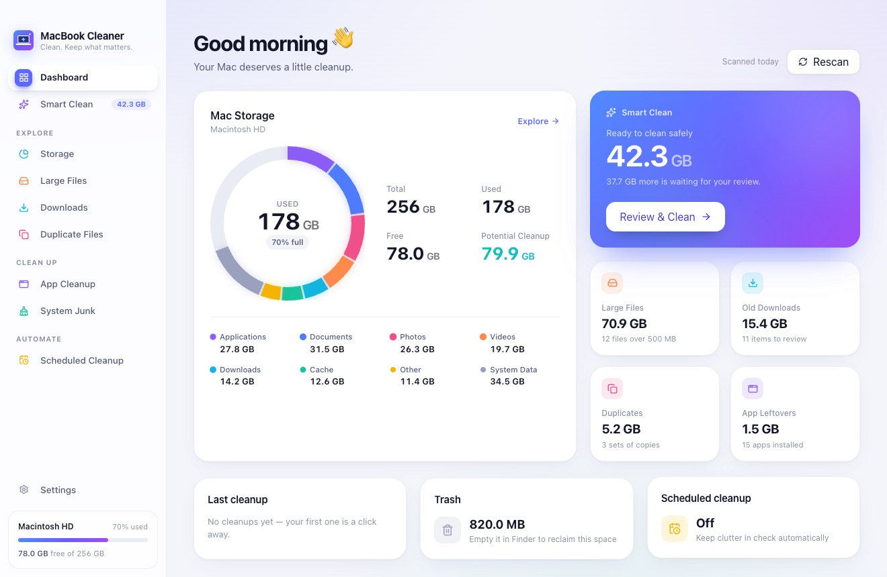
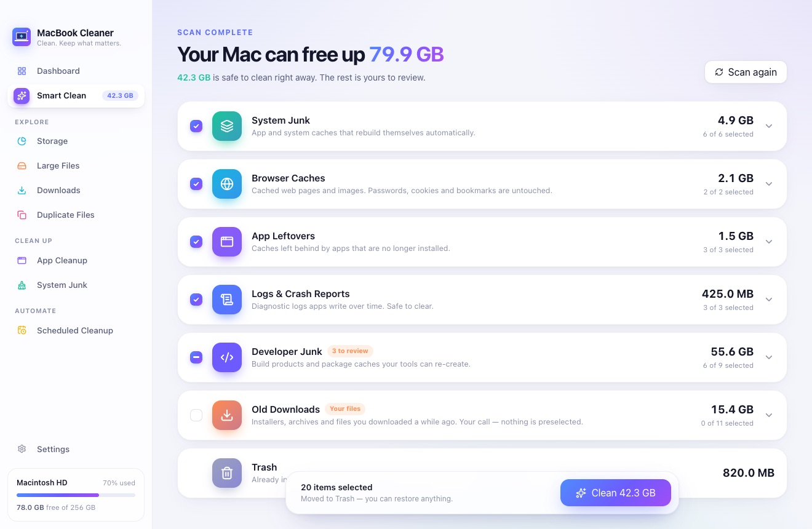
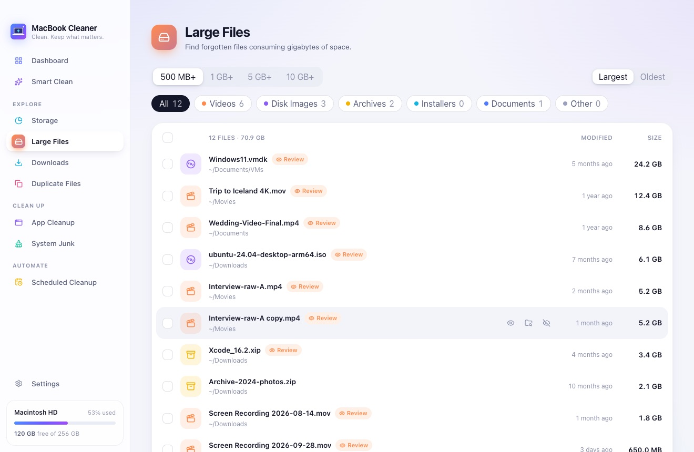
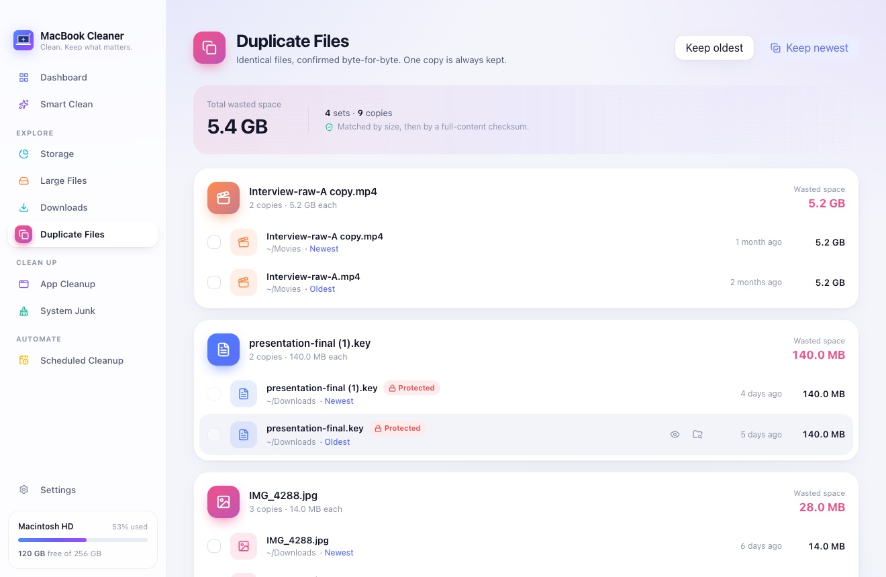

Smart Clean
Quickly identify files that are safe to clean.
MacBook Cleaner helps you find junk, oversized files, forgotten downloads, app leftovers, and unnecessary clutter — without risking your important files.
Fast. Private. Built for macOS.

Six focused tools, one friendly app. Each one shows you exactly what it found and why — and nothing leaves until you say so.
Quickly identify files that are safe to clean.
Understand what is actually using your Mac’s storage.
Find forgotten files consuming gigabytes of space.
Byte-for-byte identical copies, grouped — one copy is always kept.
Remove applications together with unnecessary leftovers.
Clear heavy developer caches from tools like Xcode, npm, Gradle and simulators.
MacBook Cleaner measures your real folders — Applications, Documents, Photos, Videos, Downloads and caches — and shows them as one living storage ring. Click any category to see the biggest items inside.
Smart Clean checks system caches, temporary files, logs, app leftovers and old downloads in one pass, then groups everything into clear categories. Safe items are preselected. Anything personal waits for you.

Filter by 500 MB, 1 GB, 5 GB or 10 GB and by type — videos, disk images, archives, installers, documents. Preview with Quick Look, reveal in Finder, then decide.

Duplicates are matched by size, then confirmed with a full-content checksum — so “looks the same” never counts. Keep the newest or the oldest in one click. At least one copy is always kept.

See each app’s real footprint: the app itself plus caches, logs, supporting files and preferences. Clean just the app data, or uninstall the whole thing. Apple’s own apps are protected.
Daily, weekly or monthly. Get a gentle reminder when there’s something worth cleaning, or let MacBook Cleaner clear developer caches for you — with hard limits, and a summary every time.
Cleaning tools need deep access to your disk. That’s exactly why MacBook Cleaner is built to need your trust as little as possible.
Every scan runs on your Mac. There’s no account and no cloud service involved.
Nothing about your files — names, paths or contents — ever leaves your computer.
We look at sizes and dates. File contents are only read to confirm two files are true duplicates.
Nothing is removed without your review, and everything goes to the Trash first.
Yes. MacBook Cleaner never permanently deletes anything — items you approve are moved to the Trash, so you can put them back. System folders, your home folder and its main folders are protected at the system level, and anything that looks sensitive (backups, keychains, keys) is locked by default.
Not unless you pick them yourself. Personal files are never preselected, always need an extra confirmation, and are never touched by scheduled cleanups. Your Photos library is never opened or modified.
Files in the Trash still take up space. MacBook Cleaner leaves emptying the Trash to you, so you always have a way back. Empty it in Finder when you’re ready.
It’s optional. macOS keeps some locations — like app caches, Mail data and the Trash — private. Granting access lets MacBook Cleaner measure them accurately. Without it, the app still works and simply shows less.
Very. It finds Xcode DerivedData, simulator data, device support files and npm, Yarn, pnpm, Gradle and CocoaPods caches — often tens of gigabytes — and explains what each one costs you to remove.
Any Mac running macOS 11 Big Sur or later, on Apple silicon or Intel.
macOS 11 or later · Apple silicon & Intel
Download for Mac Version 1.0.0